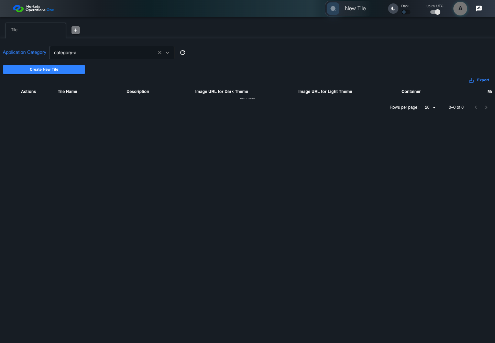
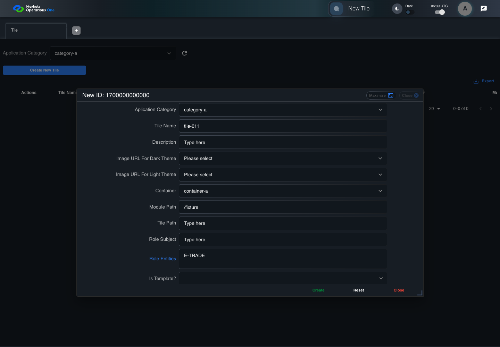

BFF-ADM-011 current BFF administration through actual UI
PASS · application/run-072/bff-adm-011-current-bff-administration-through-actual-ui-dec7fb5b2db7-attempt-1 · ACTUAL_APPLICATION_LOCAL_SERVICES
Actual current React and exact-current BFF admin controllers/services/JPA with actual migration DDL in disposable PostgreSQL. Controlled OUD/EMS2 identities and local Spring bootstrap. Fixture SQL seeds/mutates isolated records; service errors are actual database errors. Undefined agreed messages remain unresolved acceptance.
2026-10-22T06:39:14.789Z to 2026-10-22T06:39:21.154Z
Assertions and result · Artifact manifest · Exact run inputs and source hashes
Result SHA-256:c7540c02867361fa05050e7fea72c7613c87fae0abfeff0d7ba8ac3e67de1bf4Machine observations
- actual-identity-projection.json
8b8b857eee2babc218d46a6041ec98f8638d96a41b9dc615c12725e8300c55ef - baseline-inputs.json
e2ec28a24e9e81aeb85c33fefbecf8b801942bd2d52a8465ededcb10d4eaf8d5 - bff-boundary.json
7304a2cc68805718c007281cf7cbc6eed6c15dcf0b766b885bc4618a73ebca1b - committed-ui-submission-comparisons.json
4e897f678eb8ac62cf0753431699f4009924ee61d96a72ff2a6874a47e415eeb - creation-clock.json
2834d03157d80329dafc453e5dabdc6e9519b3c2eeb4b62e2278d58984c82444 - empty-filter-rule-representation.json
f67fa72ca5fed53c5856f827b1d4b900722d206dacf4265e277c376346d0effb - fixture-step-10.json
3117c5bf94116e2b109e6c7073eaa46f488fa25d561c49a038cc145f3ac16666 - fixture-step-11.json
a0d865fccb47f427f66573ce0ffc9f3e5c08a3e7841900e9d20250b79d36a649 - fixture-step-6.json
6e7f72b40290f5eb748db82dbe9f4192f57a622e6d6de23e7d88107b73b69a08 - fixture-step-7.json
fd09f09e549f39b96781c6781bfb9fc451923bdc629cc1832f5dbb88723c086d - fixture-step-8.json
32644c2930d9b1934d7554171001e656b3cd74a09db2a19004ba765fd84e81d1 - fixture-step-9.json
2278ff6c4c4ac892a2813fac33ad40487464ce9ee0ca2027533cd05a2b24404f - initial-persisted-records.json
a9c783c1985e6edc1643541f13121e21243fc075cea992bd6bb5cec0ba19ed81 - persisted-after-submit.json
2175cbc6d9d02d84fb9f61c7073e8c47b282250827c7b60f4ec2d2e7daaafa20 - reference-snapshot-3.json
dc3cb6198c459f39c672e40bd1c44620e00443f33de9fb24d9f8311fd0e6949f - reference-snapshot-4.json
421f52843e5325d967efcf48a2ad620069ed3e2c79cfb5ed39f0867b6346391d - ui-origin-bff-requests.json
e55cca79ee552d5d98ffae92a27333b4ac68d560e62767076cae0b9da12f90d9
Screenshot capture: CAPTURED. Named frames: 25.
Step screenshot bindings: COMPLETE. 24/24 canonical steps have execution screenshots.
Bindings measure structural coverage only. They do not establish screenshot content quality or relevance.
Screenshot content review: NOT_REVIEWED. Recorded context: 0/25 frames. Identical image bytes: 2 repeated frames. Recorded context does not establish human visual review.
Canonical step timeline
Given Admin A uses subject "admin-a" with role "FMO_ADMIN" in an isolated authenticated browser
Execution: PASSED.
1. step-01 Visible state after step 1: Given Admin A uses subject "admin-a" with role "FMO_ADMIN" in an isolated authenticated browser
2026-10-22T06:39:16.479Z · 1440×1000
Step: /Users/lushevol/code/github/ratan-release-impact/workbench/tasks/ui-test-coverage-20261022/test-cases.md:15066
SHA-256:eec5872632406774f1e3e79de8a07c7249836241108ba771cff133ac015434d3And the controlled Tile fixture records the initial grid rows and persisted values
Execution: PASSED.
2. step-02 Visible state after step 2: And the controlled Tile fixture records the initial grid rows and persisted values
2026-10-22T06:39:16.595Z · 1440×1000
Step: /Users/lushevol/code/github/ratan-release-impact/workbench/tasks/ui-test-coverage-20261022/test-cases.md:15067
SHA-256:8981f23155a955bd889f87b5d7fcafbd6ca0da538567d51a37c43a995c599cf8And Category 101 has label "category-a" and Import Map 201 has Module Name "container-a"
Execution: PASSED.
3. step-03 Visible state after step 3: And Category 101 has label "category-a" and Import Map 201 has Module Name "container-a"
2026-10-22T06:39:16.627Z · 1440×1000
Step: /Users/lushevol/code/github/ratan-release-impact/workbench/tasks/ui-test-coverage-20261022/test-cases.md:15068
SHA-256:6e45dc27b67ab3efb3d9280ff61fee72e58757001c21c3fadc1594e9b3f38f7aAnd both references belong to "FMO_ADMIN" and the Tile page category filter value is Category 101
Execution: PASSED.
4. step-04 Visible state after step 4: And both references belong to "FMO_ADMIN" and the Tile page category filter value is Category 101
2026-10-22T06:39:16.660Z · 1440×1000
Step: /Users/lushevol/code/github/ratan-release-impact/workbench/tasks/ui-test-coverage-20261022/test-cases.md:15069
SHA-256:6e45dc27b67ab3efb3d9280ff61fee72e58757001c21c3fadc1594e9b3f38f7aImage bytes match frame 3. An unchanged image can be valid for consecutive assertions. This match does not establish correct step content.
And the controlled creation clock returns 1700000000000 milliseconds
Execution: PASSED.
5. step-05 Visible state after step 5: And the controlled creation clock returns 1700000000000 milliseconds
2026-10-22T06:39:16.697Z · 1440×1000
Step: /Users/lushevol/code/github/ratan-release-impact/workbench/tasks/ui-test-coverage-20261022/test-cases.md:15070
SHA-256:165b3043054d4699293501830517c4b5a2d3fe02386c7a9246d7df39b9307ae6And the baseline fixture data defines "Tile Name" as "tile-011"
Execution: PASSED.
6. step-06 Visible state after step 6: And the baseline fixture data defines "Tile Name" as "tile-011"
2026-10-22T06:39:16.731Z · 1440×1000
Step: /Users/lushevol/code/github/ratan-release-impact/workbench/tasks/ui-test-coverage-20261022/test-cases.md:15071
SHA-256:165b3043054d4699293501830517c4b5a2d3fe02386c7a9246d7df39b9307ae6Image bytes match frame 5. An unchanged image can be valid for consecutive assertions. This match does not establish correct step content.
And the baseline fixture data defines "Module Path" as "/fixture"
Execution: PASSED.
7. step-07 Visible state after step 7: And the baseline fixture data defines "Module Path" as "/fixture"
2026-10-22T06:39:16.780Z · 1440×1000
Step: /Users/lushevol/code/github/ratan-release-impact/workbench/tasks/ui-test-coverage-20261022/test-cases.md:15072
SHA-256:883034f63985c6ca077afe7182752ff7401decbb7891dae8e3e80f61e8062601And the baseline fixture data defines "Tile Path" as "/case-011"
Execution: PASSED.
8. step-08 Visible state after step 8: And the baseline fixture data defines "Tile Path" as "/case-011"
2026-10-22T06:39:16.831Z · 1440×1000
Step: /Users/lushevol/code/github/ratan-release-impact/workbench/tasks/ui-test-coverage-20261022/test-cases.md:15073
SHA-256:18cc7acb1e891ce228da1bf0e5c353c2ef60485b135ee88a1c1d9c603e614846And the baseline fixture data defines "Role Entities" as "E-TRADE"
Execution: PASSED.
9. step-09 Visible state after step 9: And the baseline fixture data defines "Role Entities" as "E-TRADE"
2026-10-22T06:39:16.866Z · 1440×1000
Step: /Users/lushevol/code/github/ratan-release-impact/workbench/tasks/ui-test-coverage-20261022/test-cases.md:15074
SHA-256:27a1caed333d287c3697e871f3ecab67d2c0f34e15862dfe74dbf1b64c17033bAnd the baseline fixture data defines "Filter Rule" as ""
Execution: PASSED.10. step-10 Visible state after step 10: And the baseline fixture data defines "Filter Rule" as ""
2026-10-22T06:39:16.919Z · 1440×1000
Step: /Users/lushevol/code/github/ratan-release-impact/workbench/tasks/ui-test-coverage-20261022/test-cases.md:15075
SHA-256:3f060a384844617aefa0ad98340d3ba16797a8b2d02d7b989bb229ce937c7056And the baseline Tile references use "Aplication Category" "category-a" and "Container" "container-a"
Execution: PASSED.
11. step-11 Visible state after step 11: And the baseline Tile references use "Aplication Category" "category-a" and "Container" "container-a"
2026-10-22T06:39:17.006Z · 1440×1000
Step: /Users/lushevol/code/github/ratan-release-impact/workbench/tasks/ui-test-coverage-20261022/test-cases.md:15076
SHA-256:ec153127200a755f4e4113334f877b92f0182eb64832452a9a4713866d6f642bWhen Admin A clicks the button labeled "Create New Tile" on the Tile administration page
Execution: PASSED.
12. step-12 Visible state after step 12: When Admin A clicks the button labeled "Create New Tile" on the Tile administration page
2026-10-22T06:39:17.225Z · 1440×1000
Step: /Users/lushevol/code/github/ratan-release-impact/workbench/tasks/ui-test-coverage-20261022/test-cases.md:15077
SHA-256:2724382f56f8cb1b7b4b90b6af24035eaa79019501bbfee3f4eb4add4aa32221Then the dialog titled "new ID: 1700000000000" is visible on the Tile administration page
Execution: PASSED.
13. step-13 Visible state after step 13: Then the dialog titled "new ID: 1700000000000" is visible on the Tile administration page
2026-10-22T06:39:17.267Z · 1440×1000
Step: /Users/lushevol/code/github/ratan-release-impact/workbench/tasks/ui-test-coverage-20261022/test-cases.md:15078
SHA-256:5a391ef3eb455f7f67da0829a65383aae53d6311ae42ee0d164ffd04d8824f32When Admin A clicks the combobox labeled "Container" in dialog "new ID: 1700000000000"
Execution: PASSED.
14. step-14 Visible state after step 14: When Admin A clicks the combobox labeled "Container" in dialog "new ID: 1700000000000"
2026-10-22T06:39:17.387Z · 1440×1000
Step: /Users/lushevol/code/github/ratan-release-impact/workbench/tasks/ui-test-coverage-20261022/test-cases.md:15079
SHA-256:e5d8854d63735b2f22141ebb0c8e124df165b09d42896d7c829b2a5089145465And Admin A clicks the option labeled "container-a" in the expanded "Container" listbox for dialog "new ID: 1700000000000"
Execution: PASSED.
15. step-15 Visible state after step 15: And Admin A clicks the option labeled "container-a" in the expanded "Container" listbox for dialog "new ID: 1700000000000"
2026-10-22T06:39:18.025Z · 1440×1000
Step: /Users/lushevol/code/github/ratan-release-impact/workbench/tasks/ui-test-coverage-20261022/test-cases.md:15080
SHA-256:e61940af594f16e72db8a461f3d4c999859344a468a536f7035b8a7fc11b42e1And Admin A fills the textbox labeled "Tile Name" with "tile-011" in dialog "new ID: 1700000000000"
Execution: PASSED.16. step-16 Visible state after step 16: And Admin A fills the textbox labeled "Tile Name" with "tile-011" in dialog "new ID: 1700000000000"
2026-10-22T06:39:18.453Z · 1440×1000
Step: /Users/lushevol/code/github/ratan-release-impact/workbench/tasks/ui-test-coverage-20261022/test-cases.md:15081
SHA-256:0311eb00302d7b873ab1918999178ae1ada8739c6e3aa3ca2da69a3fdfadb2feAnd Admin A fills the textbox labeled "Module Path" with "/fixture" in dialog "new ID: 1700000000000"
Execution: PASSED.17. step-17 Visible state after step 17: And Admin A fills the textbox labeled "Module Path" with "/fixture" in dialog "new ID: 1700000000000"
2026-10-22T06:39:18.890Z · 1440×1000
Step: /Users/lushevol/code/github/ratan-release-impact/workbench/tasks/ui-test-coverage-20261022/test-cases.md:15082
SHA-256:e79739ca79a7b3d12832eaf97731fa89df4d161e502d3a119023b6c07f62e5e6And Admin A fills the textbox labeled "Tile Path" with "" in dialog "new ID: 1700000000000"
Execution: PASSED.18. step-18 Visible state after step 18: And Admin A fills the textbox labeled "Tile Path" with "" in dialog "new ID: 1700000000000"
2026-10-22T06:39:19.327Z · 1440×1000
Step: /Users/lushevol/code/github/ratan-release-impact/workbench/tasks/ui-test-coverage-20261022/test-cases.md:15083
SHA-256:f0934dbb7639239586c6d6efdbd1ed4d64d46f6869393ceb9d36f16cd7cfa8c9And Admin A fills the textarea labeled "Role Entities" with "E-TRADE" in dialog "new ID: 1700000000000"
Execution: PASSED.
19. step-19 Visible state after step 19: And Admin A fills the textarea labeled "Role Entities" with "E-TRADE" in dialog "new ID: 1700000000000"
2026-10-22T06:39:19.757Z · 1440×1000
Step: /Users/lushevol/code/github/ratan-release-impact/workbench/tasks/ui-test-coverage-20261022/test-cases.md:15084
SHA-256:4c85cfae8c991507a87432442001d444f37bbdc19657a3b533c5db04620a7fbdAnd Admin A fills the textarea labeled "Filter Rule" with "" in dialog "new ID: 1700000000000"
Execution: PASSED.
20. step-20 Visible state after step 20: And Admin A fills the textarea labeled "Filter Rule" with "" in dialog "new ID: 1700000000000"
2026-10-22T06:39:20.189Z · 1440×1000
Step: /Users/lushevol/code/github/ratan-release-impact/workbench/tasks/ui-test-coverage-20261022/test-cases.md:15085
SHA-256:e69c3eaeac3508be6447cedd7e26b30f0e9c276abeb2fd2922b928773bb90e4bAnd Admin A clicks the button labeled "Create" in dialog "new ID: 1700000000000"
Execution: PASSED.
21. step-21 Visible state after step 21: And Admin A clicks the button labeled "Create" in dialog "new ID: 1700000000000"
2026-10-22T06:39:20.503Z · 1440×1000
Step: /Users/lushevol/code/github/ratan-release-impact/workbench/tasks/ui-test-coverage-20261022/test-cases.md:15086
SHA-256:dd4edff86b1a8646ed2e1e0b10bc0a69a67bbd9efba5b67c555a6ac6dbfbcc97Then the dialog titled "new ID: 1700000000000" remains visible on the Tile administration page
Execution: PASSED.
22. step-22 Visible state after step 22: Then the dialog titled "new ID: 1700000000000" remains visible on the Tile administration page
2026-10-22T06:39:20.550Z · 1440×1000
Step: /Users/lushevol/code/github/ratan-release-impact/workbench/tasks/ui-test-coverage-20261022/test-cases.md:15087
SHA-256:366d0cbe2f17bac04bcb3c53bd2a60020b1eb96e1f850009fee10f31c3c4586bAnd the alert with severity "error" in the portal snackbar contains the exact text "Please provide the value for the Title or Module Path or Tile Path."
Execution: PASSED.
23. step-23 Visible state after step 23: And the alert with severity "error" in the portal snackbar contains the exact text "Please provide the value for the Title or Module Path or Tile Path."
2026-10-22T06:39:20.602Z · 1440×1000
Step: /Users/lushevol/code/github/ratan-release-impact/workbench/tasks/ui-test-coverage-20261022/test-cases.md:15088
SHA-256:9676d7b84a6e2ff6852627b391f5f34aff0e9e5eed0d1e200aab12c5ff3a115eAnd the Tile data grid with column "Record Id" row identifiers and loaded field values equal the initial grid snapshot on the Tile administration page
Execution: PASSED.
24. step-24 Visible state after step 24: And the Tile data grid with column "Record Id" row identifiers and loaded field values equal the initial grid snapshot on the Tile administration page
2026-10-22T06:39:20.723Z · 1440×1000
Step: /Users/lushevol/code/github/ratan-release-impact/workbench/tasks/ui-test-coverage-20261022/test-cases.md:15089
SHA-256:ae0a5a7aadf157c5604944397cb957f8dbf23c0a46a831ca952d40faecd878ec
Additional named frames
Screenshots establish visible state only. Assertions and traces support functional claims.